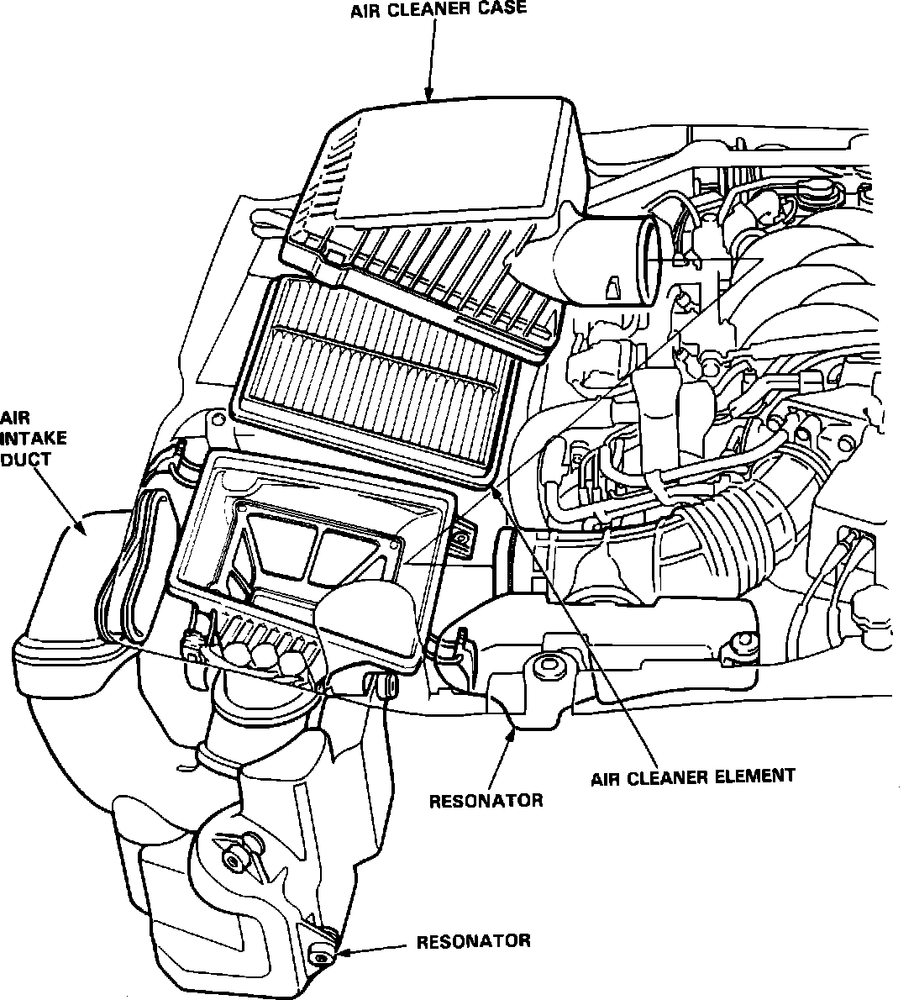

Air Cleaner Housing: Testing and Inspection
Air Cleaner:

1. Inspect the air cleaner housing for cracks, burns, and proper fit.
2. Inspect the air filter element for excessive contamination. Excess oil build-up may indicate PCV problems.
3. Check air cleaner inlet and outlet connections for proper sealing.